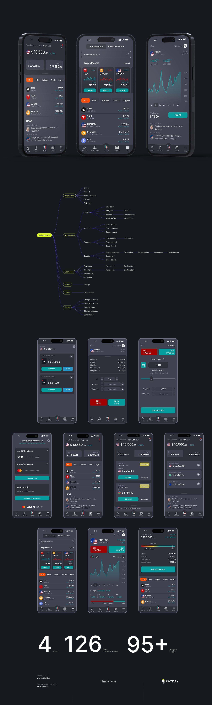

Aydın iyerarxiya
Vacib məlumat və hərəkətlər vizual prioritetlərlə önə çıxarılır.
UX/UI Design
Aktivlər, qiymət dinamikası və portfel məlumatlarını tünd temalı, məlumat yönümlü mobil tətbiqdə təqdim edən UX/UI dizaynı.

01 / Ümumi baxış
Yüksək kontrastlı qrafiklər, ardıcıl rəqəm iyerarxiyası və kompakt kartlar kiçik ekranda çoxsaylı bazar məlumatının oxunaqlılığını qoruyur.
Aktivlər, qiymət dinamikası və portfel məlumatlarını tünd temalı, məlumat yönümlü mobil tətbiqdə təqdim edən UX/UI dizaynı.
Yanaşma ekranlar arasında ardıcıllığa, informasiyanın düzgün prioritetləşdirilməsinə və əsas hərəkətlərin rahat tapılmasına əsaslanır.
02 / Yanaşma
Vacib məlumat və hərəkətlər vizual prioritetlərlə önə çıxarılır.
Ekranlar və mərhələlər istifadəçinin məqsədinə uyğun məntiqli ardıcıllıq yaradır.
Modul komponentlər yeni funksiyalara uyğun genişlənə bilən baza yaradır.
03 / Visual Direction
04 / Design System
Aydın bölmələr və görünən geri dönüş nöqtələri.
Eyni funksiyalar üçün təkrarlanan davranış və görünüş.
Mətn, rəqəm və vizuallar arasında balanslı kontrast.
05 / Növbəti
Növbəti layihəCRM Sistemi↗